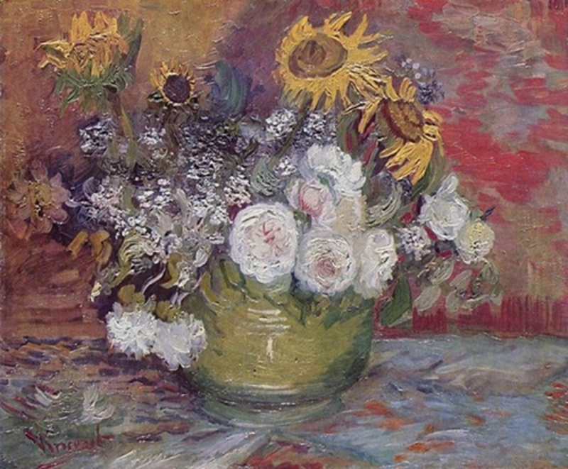
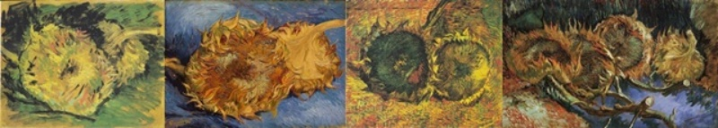

Roses and Sunflowers
ถูกวาดในปี 1886-1888 ที่กรุงปารีส ประเทศฝรั่งเศส เป็นภาพดอกทานตะวันที่อยู่รวมกับดอกไม้อืื่นในกระถาง และดอกทานตะวันที่วางบนพื้น
ภาพดอกทานตะวันแรกของเขา ชื่อว่า "Roses and Sunflowers" ซึ่งวาดในปี 1886 เป็นภาพดอกทานตะวันที่อยู่รวมกับดอกไม้อืื่นในกระถาง

ต่อมาในปี 1887 เขาจึงเริ่มเน้นการวาดรูปดอกทานตะวันที่ไม่อยู่รวมกับดอกไม้อื่น ในลักษณะดอกทานตะวันที่ตัดช่อแล้ว และวางอยู่บนพื้น ภาพชุดนี้เขาได้วาดไว้ 4 ภาพ
โดยภาพแรกเป็นภาพต้นแบบเล็กๆที่มีรายละเอียดพร้อมนำไปรวมเป็นภาพที่ใหญ่กว่าเดิม ส่วนอีก 2 ภาพถัดมา
เป็นภาพที่แวนโก๊ะวาดขึ้นเพื่อพิจารณาเลือกว่าควรจะใช้ภาพใด แต่ในที่สุดเขาก็เลือกวาดทั้ง 4 ดอกรวมกัน
เกิดเป็นภาพสุดท้ายที่มีดอกทานตะวัน 4 ดอก และตั้งชื่อเป็นภาษาฝรั่งเศสว่า "Tournesols"

Click on the picture